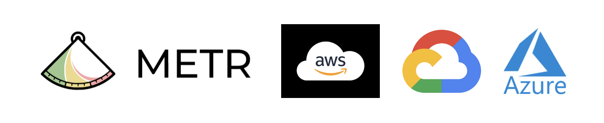

Derek Rosenzweig
Email: derek.rosenzweig1@gmail.com
Website: dr2633.github.io
GitHub: github.com/dr2633
LinkedIn: linkedin.com/in/derek-rosenzweig

About
I focus on AI safety, specifically in model evaluations and Reinforcement Learning from Human Feedback (RLHF). My work is driven by the challenge of aligning AI systems with human values and user needs, with a focus on optimizing these systems for long-term goals that benefit individuals and organizations.
For more details on my research approach, see my blog post: Reverse Evaluations: Modeling Reward Functions from User Interaction or Physically Grounded Intelligence.
Though my current work focuses on AI safety, my experience in computational neuroscience has shaped my approach to aligning sensor data across temporal scales. In my past research, I developed methods for decoding speech from neural data and aligning neural network embeddings with time-resolved brain activity, deepening my understanding of how biological neural networks process auditory and language information.
My goal is to contribute to AI systems that are optimized to guide users toward long-term objectives, fostering security and scientific progress.
Technical Skills
- Programming Languages: Python, MATLAB, Julia, R, JavaScript
- Machine Learning: PyTorch, TensorFlow, JAX, scikit-learn, CUDA
Projects
Intracranial Speech Processing [View Repository]
- Measuring Invariance Across Speakers in Neural Activity—examining how speaker-invariant phoneme representations emerge across layers in neural networks and anatomical sites in the auditory pathway. Leveraged high spatial and temporal resolution of sEEG recordings with speech recognition models.
- Feature-Responsive Electrode Identification: Correlated electrode activity in response to speech with key language and audio features, including GPT-2 and wav2vec2.0 embeddings, at a temporal resolution aligned with raw audio and neural recordings (100 Hz).
- Anatomical Localization and Auditory Pathway: Analyzed transformations across the auditory hierarchy, identifying neural populations involved in specific speech processing aspects.
GitHub Repository Structure Analyzer [View Repository]
- Automated Repository Analysis: Developed a tool to extract, analyze, and evaluate GitHub repository structures, generating JSON outputs for structured comparison.
- Batch Processing for Large-Scale Evaluations: Implemented batch processing to analyze multiple repositories from a CSV file, enabling large-scale repository evaluations.
- Integration with GitHub API: Automated repository analysis and refactoring using GitHub API, facilitating improved organization and adherence to best practices.
CloudPref: Model Evaluation for Cloud Providers [View Repository]
- Customized METR Task Standard: Adapted the METR Task Standard for evaluating model preferences for cloud service providers across various data procurement and storage scenarios.
- Eliciting Model Preferences: Developed model evaluations to elicit preferences for cloud providers (AWS, GCP, Azure), measuring and optimizing performance based on specific scenarios.
- Ranking and Optimization Methods: Designed methods to rank cloud service providers, balancing cost-effectiveness and deployment efficiency.
Experience
Stanford University, Wu Tsai Neurosciences Institute
Research Scientist (2023–Present)
Stanford, CA
- sEEG Recordings and Speech Processing: Led research on neural mechanisms of speech processing using stereotactic electroencephalography (sEEG) recordings.
- Decoding Models: Applied advanced decoding models to identify and localize neural populations encoding auditory and language features.
- Alignment of Neural and Model Embeddings: Aligned neural network embeddings (e.g., wav2vec2.0, GPT-2) with neural population responses, improving anatomical localization across cortical sites.
- Lab Management and Protocols: Developed and streamlined lab protocols for data acquisition, preprocessing, and analysis, leading to more efficient workflows and faster research outcomes.

New York University, Government Department
Graduate Research Assistant (2021–2023)
New York, NY
- Research in Auditory and Language Processing: Conducted research at the Poeppel Lab and Max Planck NYU Center for Language, Music, and Emotion, focusing on how the brain processes auditory and language information.
- Magnetoencephalography (MEG) Studies: Applied MEG to measure audiovisual interference in a Stroop task, investigating automatic label retrieval in individuals with absolute pitch.

Cornell University, Department of Government
Undergraduate Research Assistant (2018–2020)
Ithaca, NY
- Thesis Research in Energy Geopolitics: Conducted thesis research on energy geopolitics and trade dynamics in the South China Sea, analyzing the economic and geopolitical impacts of territorial disputes.